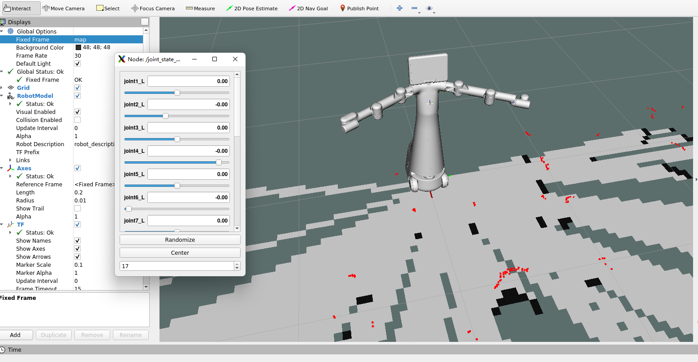

Mercury X1 Controls
Here we mainly introduce how to control the movement of Mercury X1 through a series of related instructions.
1. Chassis underlying communication
First, start the underlying communication and map construction program of the chassis. Open the ROS1 environment terminal and run the command:
roslaunch turn_on_mercury_robot mapping.launch
Output the following information:
... logging to /home/er/.ros/log/34bcf3be-0606-11ef-8293-e8fb1c355a09/roslaunch-er-desktop-7394.log
Checking log directory for disk usage. This may take a while.
Press Ctrl-C to interrupt
Done checking log file disk usage. Usage is <1GB.
started roslaunch server http://er-desktop:43117/
SUMMARY
========
PARAMETERS
* /LD14/disable_max: [180]
* /LD14/disable_min: [120]
* /LD14/flag_parted: True
* /if_akm_yes_or_no: no
* /lsm10_v2/baud_rate: 460800
* /lsm10_v2/disable_max: [260]
* /lsm10_v2/disable_min: [100]
* /lsm10_v2/frame_id: laser
* /lsm10_v2/max_distance: 30.0
* /lsm10_v2/min_distance: 0.0
* /lsm10_v2/scan_topic: scan
* /lsm10_v2/serial_port: /dev/wheeltec_lidar
* /lsm10_v2/truncated_mode: 1
* /lsn10/disable_max: [10, 40, 70, 180]
* /lsn10/disable_min: [0, 30, 60, 90]
* /lsn10/max_distance: 30.0
* /lsn10/min_distance: 0.0
* /lsn10/truncated_mode: 0
* /mercury_robot/gyro_frame_id: gyro_link
* /mercury_robot/odom_frame_id: odom
* /mercury_robot/robot_frame_id: base_footprint
* /mercury_robot/serial_baud_rate: 115200
* /mercury_robot/usart_port_name: /dev/wheeltec_con...
* /robot_description: <?xml version="1....
* /robot_pose_ekf/base_footprint_frame: base_footprint
* /robot_pose_ekf/freq: 30.0
* /robot_pose_ekf/imu_used: True
* /robot_pose_ekf/odom_data: odom
* /robot_pose_ekf/odom_used: True
* /robot_pose_ekf/output_frame: odom
* /robot_pose_ekf/sensor_timeout: 2.0
* /robot_pose_ekf/vo_used: False
* /rosdistro: noetic
* /rosversion: 1.16.0
* /rplidarNode/angle1_end: 50.0
* /rplidarNode/angle1_start: 40.0
* /rplidarNode/angle2_end: 140.0
* /rplidarNode/angle2_start: 130.0
* /rplidarNode/angle3_end: 230.0
* /rplidarNode/angle3_start: 220.0
* /rplidarNode/angle4_end: 320.0
* /rplidarNode/angle4_start: 310.0
* /rplidarNode/angle_end: 360.0
* /rplidarNode/angle_start: 0.0
* /rplidarNode/distance_max: 30.0
* /rplidarNode/distance_min: 0.0
* /rplidarNode/is_parted: False
* /slam_gmapping/angularUpdate: 0.0436
* /slam_gmapping/astep: 0.05
* /slam_gmapping/base_frame: base_footprint
* /slam_gmapping/delta: 0.05
* /slam_gmapping/iterations: 5
* /slam_gmapping/kernelSize: 3
* /slam_gmapping/lasamplerange: 0.005
* /slam_gmapping/lasamplestep: 0.005
* /slam_gmapping/linearUpdate: 0.05
* /slam_gmapping/llsamplerange: 0.01
* /slam_gmapping/llsamplestep: 0.01
* /slam_gmapping/lsigma: 0.075
* /slam_gmapping/lskip: 0
* /slam_gmapping/lstep: 0.05
* /slam_gmapping/map_update_interval: 0.01
* /slam_gmapping/maxRange: 5.0
* /slam_gmapping/maxUrange: 4.0
* /slam_gmapping/minimumScore: 30
* /slam_gmapping/odom_frame: odom
* /slam_gmapping/ogain: 3.0
* /slam_gmapping/particles: 8
* /slam_gmapping/resampleThreshold: 0.5
* /slam_gmapping/sigma: 0.05
* /slam_gmapping/srr: 0.01
* /slam_gmapping/srt: 0.02
* /slam_gmapping/str: 0.01
* /slam_gmapping/stt: 0.02
* /slam_gmapping/temporalUpdate: -1.0
* /slam_gmapping/xmax: 5.0
* /slam_gmapping/xmin: -5.0
* /slam_gmapping/ymax: 4.0
* /slam_gmapping/ymin: -4.0
NODES
/
base_to_camera (tf/static_transform_publisher)
base_to_gyro (tf/static_transform_publisher)
base_to_laser (tf/static_transform_publisher)
base_to_link (tf/static_transform_publisher)
joint_state_publisher (joint_state_publisher/joint_state_publisher)
lsm10_v2 (lsm10_v2/lsm10_v2)
mercury_robot (turn_on_mercury_robot/mercury_robot_node)
robot_pose_ekf (robot_pose_ekf/robot_pose_ekf)
robot_state_publisher (robot_state_publisher/robot_state_publisher)
save_map (world_canvas_msgs/save)
slam_gmapping (gmapping/slam_gmapping)
auto-starting new master
process[master]: started with pid [7403]
ROS_MASTER_URI=http://localhost:11311
setting /run_id to 34bcf3be-0606-11ef-8293-e8fb1c355a09
process[rosout-1]: started with pid [7414]
started core service [/rosout]
process[lsm10_v2-2]: started with pid [7421]
process[save_map-3]: started with pid [7422]
process[slam_gmapping-4]: started with pid [7427]
port = /dev/wheeltec_lidar, baud_rate = 460800
open_port /dev/wheeltec_lidar OK !
process[mercury_robot-5]: started with pid [7434]
process[base_to_link-6]: started with pid [7437]
process[base_to_laser-7]: started with pid [7447]
[ INFO] [1714380923.257953390]: Data ready
[ INFO] [1714380923.271190031]: tringai_robot serial port opened
process[base_to_camera-8]: started with pid [7455]
process[base_to_gyro-9]: started with pid [7461]
process[joint_state_publisher-10]: started with pid [7464]
process[robot_state_publisher-11]: started with pid [7476]
process[robot_pose_ekf-12]: started with pid [7488]
[ INFO] [1714380923.815804921]: output frame: odom
[ INFO] [1714380923.822399818]: base frame: base_footprint
[ INFO] [1714380924.077547181]: Initializing Odom sensor
[ INFO] [1714380924.582680406]: Odom sensor activated
[ INFO] [1714380925.085858055]: Initializing Imu sensor
[ INFO] [1714380925.087556508]: Kalman filter initialized with odom measurement
[ INFO] [1714380925.091287721]: Imu sensor activated
[ INFO] [1714380925.206262818]: Laser is mounted upwards.
-maxUrange 4 -maxUrange 5 -sigma 0.05 -kernelSize 3 -lstep 0.05 -lobsGain 3 -astep 0.05
-srr 0.01 -srt 0.02 -str 0.01 -stt 0.02
-linearUpdate 0.05 -angularUpdate 0.0436 -resampleThreshold 0.5
-xmin -5 -xmax 5 -ymin -4 -ymax 4 -delta 0.05 -particles 8
[ INFO] [1714380925.222595401]: Initialization complete
update frame 0
update ld=0 ad=0
Laser Pose= 0.0368556 0.000564671 3.14
m_count 0
Registering First Scan
update frame 4089
update ld=0.0500112 ad=4.53872e-06
Laser Pose= 0.0383474 0.001601 3.14
2. Load URDF model
After the underlying communication program is started, the Mercury X1 URDF model is loaded through the launch file, a ROS1 environment terminal is opened, and then the command is run.
roslaunch turn_on_mercury_robot slider_control.launch
The effect diagram is as follows:

You can then control the movement of the joint model in rviz by dragging the slider.
3.Joint control
After the URDF model is successfully loaded, if you want the real Mercury X1 to move along with it, you need to open another ROS1 environment terminal and run the command:
Then run the command:
rosrun turn_on_mercury_robot slider_control.py
Please note: Since the robot arm will move to the current position of the model when the command is entered, please make sure that the model in rviz does not have mold penetration before you use the command Do not quickly drag the slider after connecting the robotic arm to prevent damage to the robotic arm
4 Chassis Control
After the joint control program is started, if you want the chassis car in the real Mercury X1 to run together, you need to start the keyboard control program of the chassis car, open a ROS1 environment terminal, and then run the command:
rosrun turn_on_mercury_robot mercury_keyboard.py